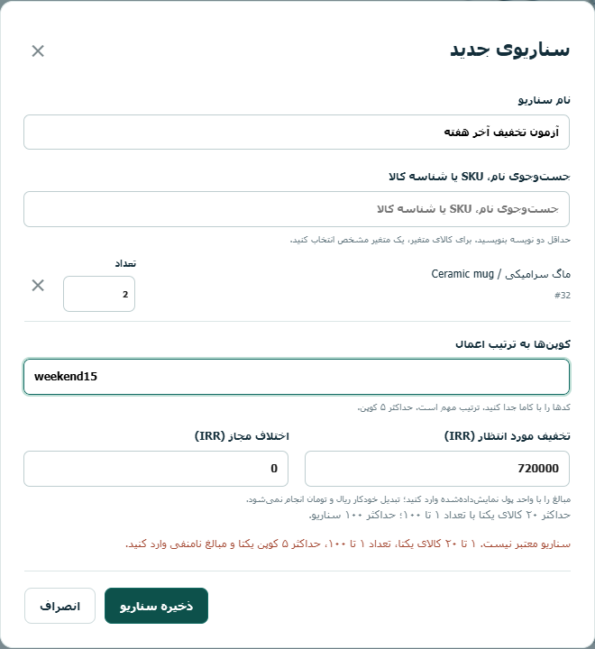
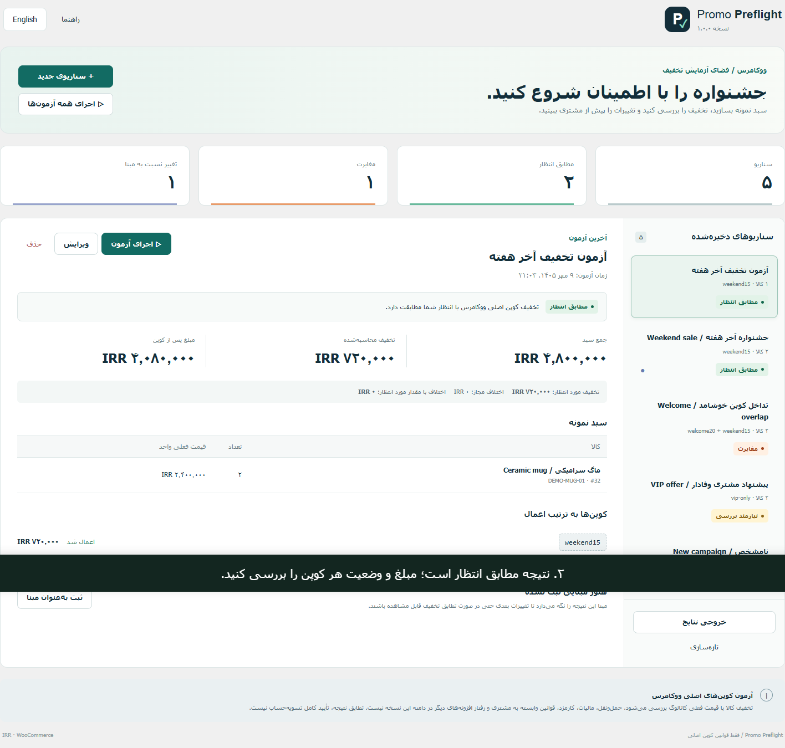
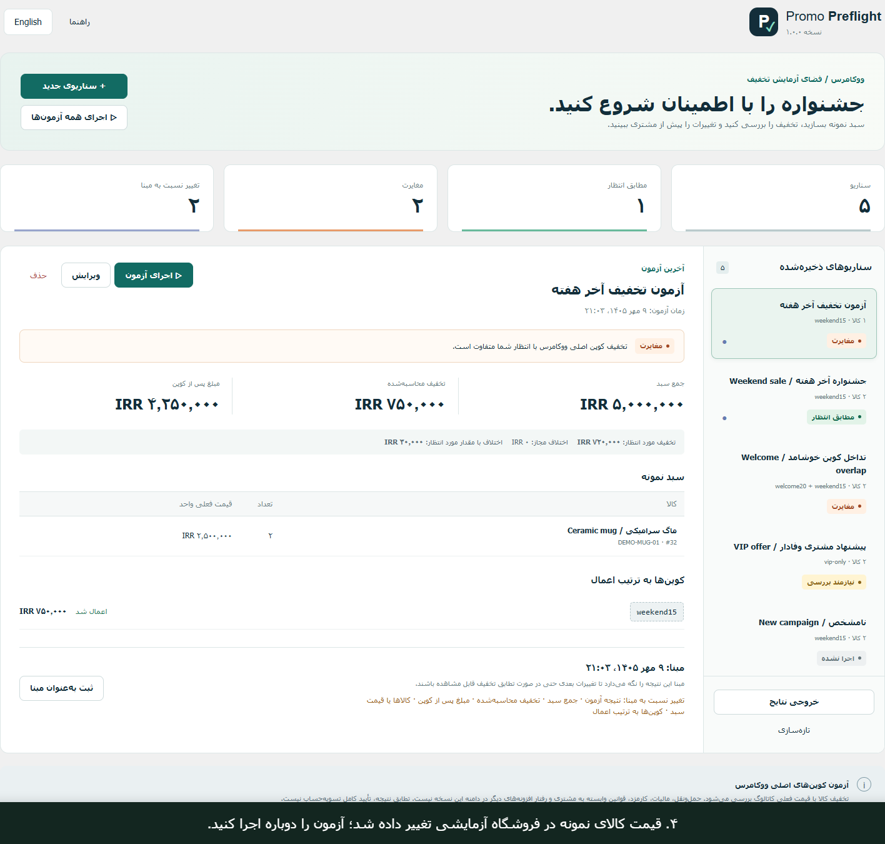
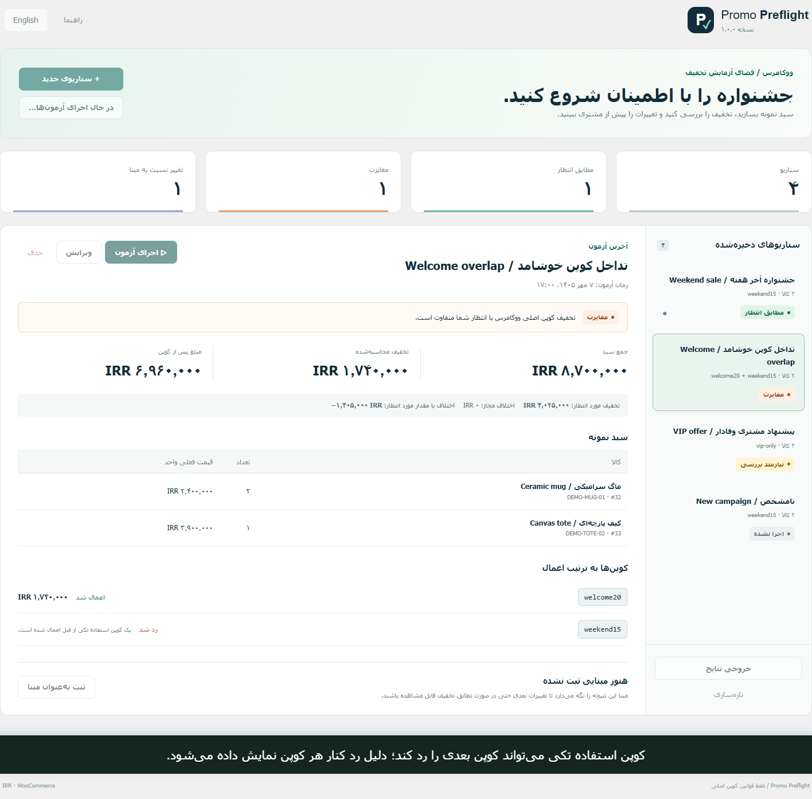

انتظار مشخص
کالا، تعداد، کوپن و مبلغ تخفیف مورد انتظار را در یک سناریو ذخیره کنید.
نتیجه قابل بررسی
مبلغ واقعی و وضعیت پذیرش یا رد هر کوپن را ببینید.
مقایسه با مبنا
نتیجه بررسیشده را مبنا کنید و تغییرات بعدی را تشخیص دهید.
نمایش واقعی افزونه با داده ساختگی
فیلم فارسی با توضیح نوشتهشده روی تصویر؛ سبد، ثبت مبنا، تغییر قیمت، مغایرت و نتیجه نیازمند بررسی را نشان میدهد. این صفحه معرفی است و ورود زنده به سایت آزمایشی ارائه نمیکند.




دامنه عملکرد ابزار
فقط تخفیف کالا با کوپنهای اصلی درصدی، مبلغ ثابت سبد و مبلغ ثابت کالا، در فروشگاه با مالیات غیرفعال. نتیجه مطابق انتظار تأیید کامل تسویهحساب نیست.
مالیات فعال، ارسال رایگان، محدودیت ایمیل/تعداد استفاده هر مشتری، کوپن سفارشی و برخی قواعد افزونههای دیگر، نیازمند بررسیاند. حملونقل، کارمزد، درگاه، موجودی، اشتراک، باندل، قالب و تسویهحساب بلوکی آزمایش نمیشوند. تشخیص تداخلها همه موارد را تضمین نمیکند.
حداکثر ۱۰۰ سناریو، ۲۰ کالا در سناریو، تعداد ۱ تا ۱۰۰، ۵ کوپن. بدون زمانبندی، پیامک/ایمیل، تبدیل ریال/تومان و اصلاح خودکار.
پرسشهای رایج
آیا سفارش واقعی ایجاد میکند؟
خیر. این ابزار از سبد نمونه استفاده میکند و سفارش، موجودی یا استفاده کوپن را تغییر نمیدهد.
برای استفاده چه لازم است؟
حداقلهای اعلامشده: وردپرس ۶.۶، PHP 8.1 و ووکامرس ۹، سایت تکی و دسترسی مدیریت ووکامرس و REST API فعال. آزمونهای بسته روی Windows/PHP 8.3.35/WP 7.1.2/WC 11.1.2/SQLite انجام شدهاند؛ آزمون Linux/MySQL/MariaDB و همه نسخههای میانی انجام نشده است.
به کلید API هوش مصنوعی نیاز دارد؟
خیر. کد محاسبه در همان سایت و با موتور اصلی تخفیف ووکامرس اجرا میشود. سرویس خارجی و لایسنس سرور بیرونی ندارد.
چطور آپدیت میشود؟
با پشتیبانگیری و بارگذاری ZIP جدید و جایگزینی نسخه فعلی. افزونه را برای آپدیت حذف نکنید، چون حذف کامل داده سناریوها را پاک میکند.